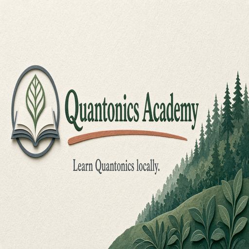
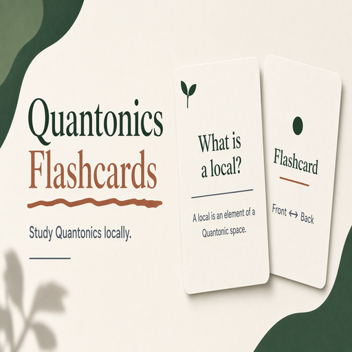
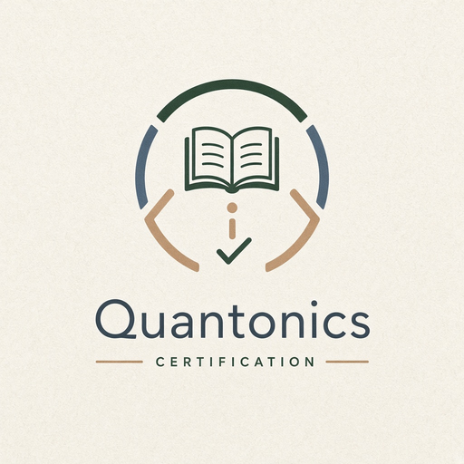

Phyllux apps hub
6. Learning platform
15 modules in this Suite family. Soft launch lists the map; depth grows as Suite modules ship.

56. Quantonics AcademyFull course environment.57. Quantonics 101Beginner curriculum.
58. Quantonics UniversityMulti-level curriculum beginner to advanced.
59. Quantonics Student PathSuggest next pages for a learner.
60. Quantonics Quiz AppQuizzes from site material.

61. Quantonics FlashcardsSpaced repetition of terms.62. Quantonics TutorOne concept at a time AI tutor.
63. Quantonics Socratic TutorQuestions that shift perspective.
64. Quantonics Debate SimulatorArgue against classical SOM-style AI.
65. QTM Training SimulatorPractice switching thinking modes.
66. Quantonics Reading CompanionExplain terms while reading a page.
67. Knowledge Graph CourseLearn by exploring the graph.
68. Student Progression DashboardTrack understood concepts.

69. Quantonics CertificationTests and levels or badges.70. Quantonics Research LabStudents propose and investigate questions.